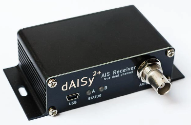

AIS (for boats)¶
Rover-4.2.0 (and higher) support Automatic identification system (AIS) sensors allowing the position of manned boats to be displayed on the ground station
Note
Support for this peripheral is also available for Planes and Copters using the Custom Firwmare Build Server , by creating a firmware build including this feature listed under the IDENT category.
What to Buy¶
AIS compatible antenna (161.975 MHz and 162.025 MHz). VHF antennas including this one should work
AutoPilot connection¶
The dAISy2 should be connected to one of the autopilot’s serial ports as shown below
{kind=link}
Autopilot Configuration¶
Connect to the autopilot with a ground station and set these parameters and then reboot the autopilot
AIS_TYPE = 1 (Enable)
SERIAL1_PROTOCOL = 40 (AIS) if the sensor is connected to serial port 1. If another serial port is used please set the appropriate SERIALx_PROTOCOL parameter
SERIAL1_BAUD = 38 (38400 bps) if using serial port 1. If another serial port is used please set the appropriate SERIALx_BAUD parameter instead
SR0_ADSB = 5 to enable sending AIS mavlink messages to the ground station over Serial0 (the USB port). If a telemetry radio is used the SRx_ADSB param corresponding to its serial port should also be set to 5(Hz).
dAISy2 Configuration and Testing¶
Connect dAISy2 to your PC using a USB cable
Download, install and run a terminal program such as Putty
Connect to the dAISy2’s COM port at 38400 baud and press <ESC> to view the setup menu
Type “3” to enable the serial port. “38400 8N1 serial output (NMEA HS w/ adapter)” should be displayed
Type “#” to save this change and retain this baudrate on boot
Type “T” to enable entering a test NMEA message and then copy-paste this message, “!AIVDM,1,1,,A,3815;hUw00wfUdHMPfQ4s8WT0D`r,0*00”, or hit “Enter” and use the default location
{kind=link}
Connect to the autopilot with Mission Planner (or another ground station) and a boat should appear on the South West coast of England
{kind=link}
press <ESC> to stop sending test messages
Logging¶
The AIS_OPTIONS parameter specifies which AIS messages are logged. These messages are useful for debugging purposes and contain the following information
TimeUS : System time that the AIS message was received
Num : Number of fragments in the currently accumulating message
Total : Fragment number of this sentence
ID : Sequential message ID for multi-sentence messages
Payload : Data payload